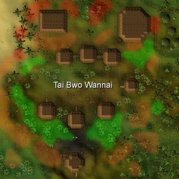
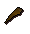
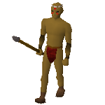
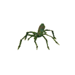
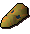
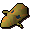

")
Woodcutting - Tai Bwo Wannai Clean-up
Introduction | Location | Requirements | Recommended Items
Holding back the Jungle | Rewards | Development Team
Holding back the Jungle | Rewards | Development Team
In order to enjoy this feature you have to be a RuneScape member. Please subscribe to get this feature.
Please note this is a 'Dangerous' task. If you die during this task, you will lose your items.
Introduction

Location

![[image]](../../img/main/kbase/items/trees/light_jungle.gif)
Requirements
To take part in this task you must have completed the Jungle Potion quest. You will need to be wielding a machete in order to cut back the growth, not just have one in your inventory. Machetes do not have a required level to wield, but level 10 Woodcutting is required to chop light jungle, level 20 is required to chop medium jungle and level 35 is required to chop dense jungle.

|
|
Light Jungle |
|
|
Medium Jungle |
|
|
Dense Jungle |
The more dense the jungle, the more Woodcutting experience you will receive.
Recommended Items
Item |
Obtained From |
Use in TBWC |
![[image]](../../img/main/kbase/items/potions/other_potions/antipoison.gif) Anti-poison Anti-poison |
Made by players using the Herblore skill. | Some of the NPCs you will encounter through the clean-up will have the ability to poison you, so it is a good idea to carry a cure. This is also one of the broodoo victims' weaknesses so carry one just in case. |
![[image]](../../img/main/kbase/items/potions/other_potions/relicyms_balm.gif) Relicym's balm Relicym's balm |
Made during the Zogre Flesh Eaters quest by players. | This is one of the broodoo victims' weaknesses, so carry one just in case one attacks. |
![[image]](../../img/main/kbase/items/food/fish/trout.gif) Food Food |
This item can be obtained from Fishing, killing animals or being bought from stores or other players. | This is one of the broodoo victims' weaknesses, so carry some just in case one attacks. |
![[image]](../../img/main/kbase/items/axes/iron_axe.gif) Woodcutting hatchet Woodcutting hatchet |
Many stores around RuneScape. | The trees in the enclosure of Tai Bwo Wannai Village can only be chopped down using a Woodcutting hatchet. So make sure you have one handy. |
![[image]](../../img/main/kbase/items/machete/red_topaz_machette.gif) Machete Machete |
See the Woodcutting Guide for information on how to obtain a machete. | Machetes are the only tool that can be used to cut back the jungle growth. |
![[image]](../../img/main/kbase/items/lanturns_candle_torch/tinderbox.gif) Tinderbox Tinderbox |
Can be bought from many stores around RuneScape. | Can be used to roast spider carcasses to provide food while you are on the clean-up. |
![[image]](../../img/main/kbase/items/tools/spade.gif) Spade Spade |
This item can be obtained from many gardeners near Farming patches. They may also be available from general stores. | Can be used to dig up goutweed tuber plants. |
![[image]](../../img/main/kbase/armour/melee/rune_plate.gif) Armour Armour |
Many stores around RuneScape, monster drops or traded from players. | Some of the NPCs that attack you while you are on the clean-up can be dangerous if you are not prepared, so make sure your armour is the best you can wear. |
![[image]](../../img/main/kbase/weapons/melee/dragon_battleaxe.gif) Weapon Weapon |
This item can be obtained from shops, traded with players or from monster drops. | Some of the NPCs that attack you while you are on the clean-up can be dangerous if you are not prepared, so it is important that you carry a weapon to defend yourself. |
Holding back the Jungle
There are three types of jungle growth: light, medium and dense. When you cut back the jungle you will receive some spars. The type of spar you receive will be the same as the type of jungle you cut back. For example, if you cut back some light jungle, you will receive light spars. The number of spars you receive when cutting back one jungle growth is random, so you could be trimming two different jungle growths of the same type and receive five spars from one and eight from another.
Using Spars
![[image]](../../img/main/kbase/items/logs/light_spar.gif) There are different uses for spars. One use is for repairing the fence around Tai Bwo Wannai Village. Repairing the fence may use many spars, so you may need to cut back a lot of jungle. If you have spar in your inventory just left-click on the rotten village fence and you will begin to repair it.
There are different uses for spars. One use is for repairing the fence around Tai Bwo Wannai Village. Repairing the fence may use many spars, so you may need to cut back a lot of jungle. If you have spar in your inventory just left-click on the rotten village fence and you will begin to repair it.
Repairing the fence goes through different stages: partial fence, short fence and medium fence.
When you have completed rebuilding the fence a message will come up on the screen to confirm this. It will also state that you can either rebuild another fence, or reinforce the same fence. You can continually reinforce the fence after it has been rebuilt, so reinforcing one part of the fence once should be adequate.
Enemies
While you are cutting back the jungle you may encounter several NPCs that will attack you. These NPCs drop several new items when defeated, so it's worth defending yourself.Fighting mosquitoes will grant a small amount of Agility experience.
NPC |
Item Dropped |
Use of Item |
![[image]](../../img/main/kbase/minigames/tbw_cleanup/tbw_mosquito.gif) Mosquito swarm |
 Proboscis |
Secondary ingredient when making mosquito Summoning pouches. |
|  Tribesmen |
![[image]](../../img/main/kbase/items/bones/bones.gif) Bones |
Increases Prayer experience. |
![[image]](../../img/main/kbase/minigames/tbw_cleanup/tbw_bush_snake.gif) Bush Snake |
![[image]](../../img/main/kbase/items/hide/snakehide.gif) Snake hide |
Tanned to make snakeskin armour or broodoo shield. |
|  Jungle spider |
![[image]](../../img/main/kbase/minigames/tbw_cleanup/spider_carcass1.gif) Spider carcass |
Used to make new food, spider on a stick. |
![[image]](../../img/main/kbase/minigames/tbw_cleanup/blue_broodoo_victim.gif) Blue broodoo victim |
![[image]](../../img/main/kbase/minigames/tbw_cleanup/combatmask.gif) Blue broodoo mask |
Used to make blue broodoo shield. |
![[image]](../../img/main/kbase/minigames/tbw_cleanup/green_broodoo_victim.gif) Green broodoo victim |
![[image]](../../img/main/kbase/minigames/tbw_cleanup/poisonmask.gif) Green broodoo mask |
Used to make green broodoo shield. |
![[image]](../../img/main/kbase/minigames/tbw_cleanup/orange_broodoo_victim.gif) Orange broodoo victim |
 Orange broodoo Mask |
Used to make orange broodoo shield. |
Broodoo Victims
The broodoo victims that attack while you are hacking away at the jungle have a Combat level of 60. Each of these victims have a weakness that you can use to your advantage to beat them. So if you are not strong enough to beat them in combat or if you are low on life points you may find that using this weakness against them will help you. Simply select whatever item their weakness is, and use it on the broodoo victim, and they will lose a significant number of life points.- The blue victims are weak against food.
- The green victims are weak against anti-poison potion.
- The orange victims are weak against relicym's balm, the anti-disease potion.
Broodoo Shields
The masks that the broodoo victims drop can be used with two snakeskins and eight nails to make a broodoo shield. Broodoo shields require level 35 Crafting in order to be constructed.Broodoo shields have a special ability when used in combat. If you are fighting an enemy and you have your broodoo shield equipped then it will have a 1 in 10 chance of casting a spell on your enemy.
The shield you use will determine what its effect will be. If you are using a poison shield this will lower your enemy's Defence. If you are using a disease shield, this will lower your enemy's Strength stat. If you are using a combat shield, this will lower your enemy's Attack stat.
Your enemy's stats will be decreased by 1 point first, then by 5% after that. A few conditions apply; for example, the enemy has to be at close range, they must still have over half of their life points, and their stats must be at base levels for them to be affected.
The number, by the name of the broodoo shield, represents the number of charges left on it. Every time you use the spell, this charge will decrease by one.
|
+ | ![[image: snakeskin]](../../img/main/kbase/items/hide/snakeleather.gif "snakeskin")
|
+ | ![[image: steel nails]](../../img/main/kbase/items/tools/steel_nails.gif "steel nails") x 8 |
= | ![[image: combat shield]](../../img/main/kbase/minigames/tbw_cleanup/combatshield.gif "combat shield") Blue broodoo shield |
|
+ |
|
+ | x 8 |
= | ![[image: poison shield]](../../img/main/kbase/minigames/tbw_cleanup/poisonshield.gif "posion shield") Green broodoo shield |
| + |
|
+ | x 8 |
= |  Orange broodoo shield |
Snakeskin Armour
If you defeat one of the bush snakes that attack you while you are cutting back the jungle growth, you will obtain some snake hide. Take this to a tanner to turn it into snakeskin. This snakeskin can be used to make snakeskin armour: boots, vambraces, a bandana, chaps and body. For information on the Attack and Defence bonuses given when this armour is worn, see the Ranged Guide. For information on how to make snakeskin armour, please see the Crafting Guide.Goutweed Tubers
![[image]](../../img/main/kbase/items/seeds/goutweed.gif) When you come across goutweed tubers when cutting back the jungle growth, dig it up. These can be grown the same way herbs can, so go to the nearest herb patch and plant it. Once this has fully grown, harvest it and you can trade the grown goutweed to Sanfew in the Taverley herb shop for other herbs. Alternatively, you can sell the goutweed to Gabooty in Tai Bwo Wannai and receive the Karamja currency (trading sticks) in return, or eat them for health and run energy.
When you come across goutweed tubers when cutting back the jungle growth, dig it up. These can be grown the same way herbs can, so go to the nearest herb patch and plant it. Once this has fully grown, harvest it and you can trade the grown goutweed to Sanfew in the Taverley herb shop for other herbs. Alternatively, you can sell the goutweed to Gabooty in Tai Bwo Wannai and receive the Karamja currency (trading sticks) in return, or eat them for health and run energy.
Favour
While cutting the jungle back, repairing the fence and fending off village threats, you will receive Tai Bwo Favour. This favour can be exchanged for rewards indigenous to this island.If you wear tribal outfits, then the villagers will recognise you and give you a larger percentage of your rewards.
Rewards
Redeeming Favour
Once you have a percentage of Favour, visit one of the villagers around Tai Bwo Wannai village and they will thank you for repairing the fence and dealing with the threats to the village by rewarding you with trading sticks. You cannot redeem trading sticks from the same NPC in a row, so use this time to either increase your Favour's percentage or go to another villager and see if they are more generous. The amount of trading sticks you receive from each NPC may vary. The more percentage of Favours you have, the more trading sticks you will receive from the villagers.New Food
When the jungle spiders die they drop spider carcasses. These carcasses can provide you with a food supply when your busy cutting down jungle and will save you Fishing for food.To make an edible meal from the spider carcass, you first need to make a skewer. To make a skewer use a machete with a spar or arrowshaft, any variety will do. You will then have a number of skewers in your inventory. Use the skewer with the spider carcass and roast it on a fire. This will produce a spider on a stick, a nice tasty meal for hard workers on the go. For information about the cooking level required when making the spiders on sticks, please see the Cooking Guide.
Tree Enclosure
![[image]](../../img/main/kbase/items/trees/teak.gif) Also in Tai Bwo Wannai Village is a special tree enclosure, to the right of Trufitius' hut. In this enclosure you will find mahogany and teak trees.
Also in Tai Bwo Wannai Village is a special tree enclosure, to the right of Trufitius' hut. In this enclosure you will find mahogany and teak trees. To enter this enclosure you will have to pay 100 trading sticks. Once inside, you can cut down the trees with a normal Woodcutting hatchet. For information about the Woodcutting level required when cutting these new trees, please see the Woodcutting Guide.
New Clothes
After gaining your trading sticks from the villagers, you can now buy from the General Store to the north-west of Karamja. By right-clicking on Gabooty (wandering around the center of the village) you can buy items from his Cooperative. Some of the items shown on the shop menu aren't for sale, they are there so that players can sell their items to the shore in exchange for trading sticks. In Gabooty's Tai Bwo Wannai Cooperative, you can buy various items including new clothes.Gnome Drinks
Also available on Gabooty's right-click menu is the option to sell gnome cocktails in exchange for trading sticks. If the cocktails are in stock, you can use your earned trading sticks and buy some. For information on the effects of each cocktail see the Cooking Guide.Tai Bwo Wannai Parcel Service
This service allows players to send items from their inventory to their banks, at a cost of 10 trading sticks per item.
Development Team
Developer: Tytn H
Graphics: Tom W
QA: Martin I
Audio: Ian T

More articles in
Woodcutting
|
|
|
Further Help
If this article does not help you, you may find the following sections of the RuneScape site helpful:
|
|